स्कन्ध 1 · अध्याय 12
श्लोक १
सूत उवाच–
विदुरस्तीर्थयात्रायां मैत्रेयादात्मनो गतिम् ।
ज्ञात्वाऽऽगाद्धस्तिनपुरं तयाऽवाप्तविवित्सितः।। १ ।।
विदुरस्तीर्थयात्रायां मैत्रेयादात्मनो गतिम् ।
ज्ञात्वाऽऽगाद्धस्तिनपुरं तयाऽवाप्तविवित्सितः।। १ ।।
श्लोक २
यावतः कृतवान्प्रश्नान् क्षत्ता कौषारवाग्रतः ।
जातैकभक्तिर्गोविन्दे तेभ्यश्चोपरराम ह।। २ ।।
जातैकभक्तिर्गोविन्दे तेभ्यश्चोपरराम ह।। २ ।।
श्लोक ३
तं बन्धुमागतं दृष्ट्वा धर्मपुत्रः सहानुजः ।
धृतराष्ट्रो युयुत्सुश्च सूतः शारद्धतः पृथा।। ३ ।।
धृतराष्ट्रो युयुत्सुश्च सूतः शारद्धतः पृथा।। ३ ।।
श्लोक ४
गान्धारी द्रौपदी ब्रह्मन्सुभद्रा चोत्तरा कृपी ।
अन्याश्च जामयः पाण्डोर्ज्ञातयः ससुताः स्त्रियः।। ४ ।।
अन्याश्च जामयः पाण्डोर्ज्ञातयः ससुताः स्त्रियः।। ४ ।।
श्लोक ५
प्रत्युज्जग्मुः प्रहर्षेण प्राणांस्तन्व इवागतान् ।
अभिसङ्गम्य विधिवत्परिष्वङ्गाभिवन्दनैः।। ५ ।।
अभिसङ्गम्य विधिवत्परिष्वङ्गाभिवन्दनैः।। ५ ।।
भागवततात्पर्यनिर्णय
श्लोक ६
मुमुचुः प्रेमबाष्पौघं मिथ औत्कण्ठ्यकातराः ।
राजा तमर्हयाञ्चक्रे कृतासनपरिग्रहम्।। ६ ।।
राजा तमर्हयाञ्चक्रे कृतासनपरिग्रहम्।। ६ ।।
श्लोक ७
तं भुक्तवन्तमासीनं विश्रान्तं सुखमासने ।
प्रश्रयावनतो राजा प्राह स्वानाञ्च शृृण्वताम्।। ७ ।।
प्रश्रयावनतो राजा प्राह स्वानाञ्च शृृण्वताम्।। ७ ।।
श्लोक ८
युधिष्ठिर उवाच–
अपि स्मरथ नो युष्मत्पक्षच्छायासमेधितान् ।
विपद्गणाद्विषाग्न्यादेर्मोचिता यत्समातृकाः।। ८ ।।
अपि स्मरथ नो युष्मत्पक्षच्छायासमेधितान् ।
विपद्गणाद्विषाग्न्यादेर्मोचिता यत्समातृकाः।। ८ ।।
श्लोक ९
कया वृत्या वर्तितं वै चरद्भिः क्षितिमण्डलम् ।
तीर्थानि क्षेत्रमुख्यानि सेवितानीह भूतले।। ९ ।।
तीर्थानि क्षेत्रमुख्यानि सेवितानीह भूतले।। ९ ।।
श्लोक १०
भवद्विधा भागवतास्तीर्थभूतास्स्वयं प्रभो ।
तीर्थीकुर्वन्ति तीर्थानि स्वात्मस्थेन गदाभृता।। १० ।।
तीर्थीकुर्वन्ति तीर्थानि स्वात्मस्थेन गदाभृता।। १० ।।
श्लोक ११
अपि नः सुहृदस्तात बान्धवाः कृष्णदैवताः ।
दृष्टाः श्रुता वा यदवः स्वपुर्यां सुखमासते।। ११ ।।
दृष्टाः श्रुता वा यदवः स्वपुर्यां सुखमासते।। ११ ।।
श्लोक १२
इत्युक्तो धर्मराजेन सर्वं तत्समवर्णयत् ।
यथानुभूतं भ्रमता विना यदुकुलक्षयम्।। १२ ।।
यथानुभूतं भ्रमता विना यदुकुलक्षयम्।। १२ ।।
भागवततात्पर्यनिर्णय
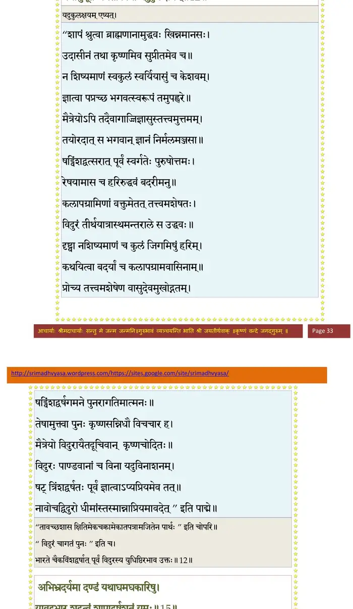
श्लोक १३
तत्व(तद)प्रियं दुर्विषहं नृणां स्वयमुपस्थितम् ।
नावेदयत्सुकरुणो दुःखितान्द्रष्टुमक्षमः।। १३ ।।
नावेदयत्सुकरुणो दुःखितान्द्रष्टुमक्षमः।। १३ ।।
श्लोक १४
कञ्चित्कालमथावात्सीत्सत्कृतो देववत्स्वकैः ।
भ्रातुर्ज्येष्ठस्य श्रेयस्कृत्सर्वेषां प्रीतिमावहन्।। १४ ।।
भ्रातुर्ज्येष्ठस्य श्रेयस्कृत्सर्वेषां प्रीतिमावहन्।। १४ ।।
श्लोक १५
अबिभ्रदर्यमा दण्डं यथाघमघकारिषु ।
यावद्बभार शूद्रत्वं शापाद्वर्षशतं यमः।। १५ ।।
यावद्बभार शूद्रत्वं शापाद्वर्षशतं यमः।। १५ ।।
भागवततात्पर्यनिर्णय
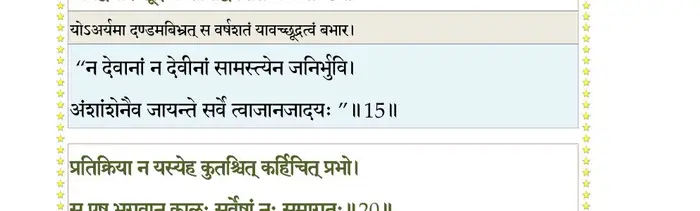
श्लोक १६
युधिष्ठिरो लब्धराज्यो दृष्ट्वा पौत्रं कुलन्धरम् ।
भ्रातृभिर्लोकपालाभैर्मुमुदे परया श्रिया।। १६ ।।
भ्रातृभिर्लोकपालाभैर्मुमुदे परया श्रिया।। १६ ।।
श्लोक १७
अथामन्त्र्याच्युतो बन्धून्निवर्त्यानुगतान्विभुः ।
अर्जुनोद्धवशैनेयैर्ययौ द्वारवतीं हयैः।। १७ ।।
अर्जुनोद्धवशैनेयैर्ययौ द्वारवतीं हयैः।। १७ ।।
श्लोक १८
एवं गृहेषु सक्तानां प्रमत्तानां गृहेहया ।
अत्यक्रामदविज्ञातः कालः परमदुस्तरः।। १८ ।।
अत्यक्रामदविज्ञातः कालः परमदुस्तरः।। १८ ।।
श्लोक १९
विदुरस्तदभिप्रेत्य धृतराष्ट्रमभाषत ।
राजन्निर्गम्यतां शीघ्रं पश्येदं भयमागतम्।। १९ ।।
राजन्निर्गम्यतां शीघ्रं पश्येदं भयमागतम्।। १९ ।।
श्लोक २०
प्रतिक्रिया न यस्येह कुतश्चित्कर्हिचित् प्रभो ।
स एष भगवान् कालः सर्वेषां नः समागतः।। २० ।।
स एष भगवान् कालः सर्वेषां नः समागतः।। २० ।।
भागवततात्पर्यनिर्णय
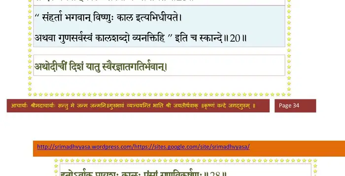
श्लोक २१
येन चेहाभिपन्नोऽयं प्राणैः प्रियतमैरपि ।
जनः सद्यो वियुज्येत किमुतान्यैर्धनादिभिः।। २१ ।।
जनः सद्यो वियुज्येत किमुतान्यैर्धनादिभिः।। २१ ।।
श्लोक २२
पितृभ्रातृसुहृत्पुत्रा हतास्ते विगतं वयः ।
आत्मा च जरसा ग्रस्तः परगेहमुपाससे।। २२ ।।
आत्मा च जरसा ग्रस्तः परगेहमुपाससे।। २२ ।।
श्लोक २३
अहो महीयसी जन्तोर्जीविताशा यया भवान् ।
भीमापवर्जितं पिण्डमादत्से गृहपालवत्।। २३ ।।
भीमापवर्जितं पिण्डमादत्से गृहपालवत्।। २३ ।।
श्लोक २४
अग्निर्निसृष्टो दत्तश्च गरो दाराश्च दूषिताः ।
हृतं क्षेत्रं धनं येषां तदन्नैरसुभिः कियत्।। २४ ।।
हृतं क्षेत्रं धनं येषां तदन्नैरसुभिः कियत्।। २४ ।।
श्लोक २५
तस्यापि तव देहोऽयं कृपणस्य जिजीविषोः ।
परैत्यनिच्छतो जीर्णो जरया वाससी इव।। २५ ।।
परैत्यनिच्छतो जीर्णो जरया वाससी इव।। २५ ।।
श्लोक २६
गतस्वार्थमिमं देहं वियुक्तो मुक्तबन्धनः ।
अविज्ञातगतिर्जह्यात्स वै धीर उदाहृतः।। २६ ।।
अविज्ञातगतिर्जह्यात्स वै धीर उदाहृतः।। २६ ।।
श्लोक २७
यः स्वतः परतो वेह जातनिर्वेद आत्मवान् ।
हृदि कृत्वा हरिं गेहात्प्रव्रजेत्स नरोत्तमः।। २७ ।।
हृदि कृत्वा हरिं गेहात्प्रव्रजेत्स नरोत्तमः।। २७ ।।
श्लोक २८
अथोदीचीं दिशं यातु स्वैरज्ञातगतिर्भवान् ।
इतोऽर्वाक्प्रायशः कालः पुंसां गुणविकर्षणः।। २८ ।।
इतोऽर्वाक्प्रायशः कालः पुंसां गुणविकर्षणः।। २८ ।।
भागवततात्पर्यनिर्णय
श्लोक २९
एवं राजा विदुरेणानुजेन प्रज्ञाचक्षुर्बोधित आजमीढः ।
छित्वा स्वेषु स्नेहपाशान्द्रढिम्नो निश्चक्राम भ्रातृसन्दर्शिताध्वा।।२९।।
छित्वा स्वेषु स्नेहपाशान्द्रढिम्नो निश्चक्राम भ्रातृसन्दर्शिताध्वा।।२९।।
श्लोक ३०
पतिं प्रयान्तं सुबलस्य पुत्री पतिव्रता चानुजगाम साध्वी ।
हिमालयं न्यस्तदण्डप्रहर्षं मनस्विनामवसत्संविहारम्।। ३० ।।
हिमालयं न्यस्तदण्डप्रहर्षं मनस्विनामवसत्संविहारम्।। ३० ।।
श्लोक ३१
अजातशत्रुः कृतमैत्रो हुताग्निर्विप्रान्नत्वा तिलगोवस्त्ररुग्मैः ।
१गृहं प्रविष्टो गुरुवन्दनाय न चापश्यत्पितरौ सौबलीञ्च।। ३१ ।।
१गृहं प्रविष्टो गुरुवन्दनाय न चापश्यत्पितरौ सौबलीञ्च।। ३१ ।।
भागवततात्पर्यनिर्णय
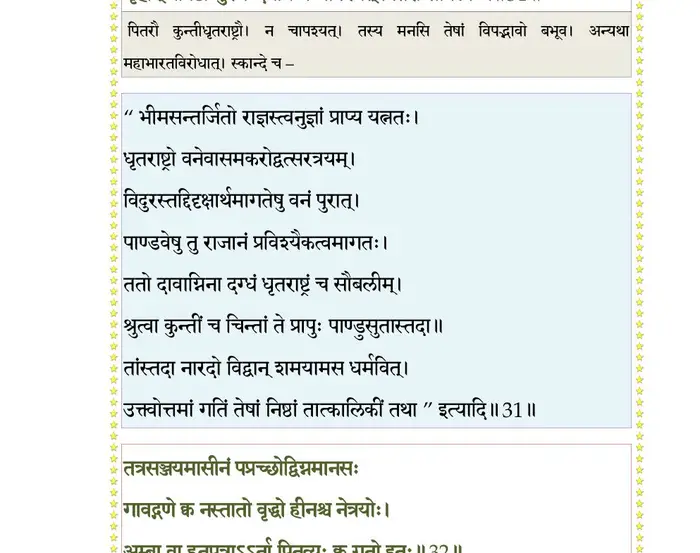
श्लोक ३२
तत्र सञ्जयमासीनं पप्रच्छोद्विग्नमानसः ।
गावद्गणे क्व नस्तातो वृद्धो हीनश्च नेत्रयोः ।
अंबा वा हतपुत्रार्ता पितृव्यः क्व गतः सुहृत्।। ३२ ।।
गावद्गणे क्व नस्तातो वृद्धो हीनश्च नेत्रयोः ।
अंबा वा हतपुत्रार्ता पितृव्यः क्व गतः सुहृत्।। ३२ ।।
भागवततात्पर्यनिर्णय
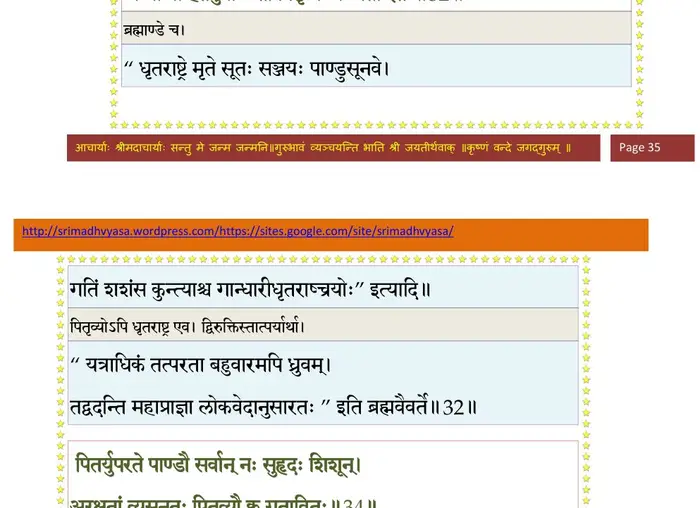
श्लोक ३३
अपि मय्यकृतप्रज्ञे हतबन्धुः स्वभार्यया ।
आशंसमानः शमलं गङ्गायां दुःखितोऽपतत्।। ३३ ।।
आशंसमानः शमलं गङ्गायां दुःखितोऽपतत्।। ३३ ।।
श्लोक ३४
पितर्युपरते पाण्डौ सर्वान्नः सुहृदः शिशून् ।
अरक्षतां व्यसनतः पितृव्यौ क्व गतावितः।। ३४ ।।
अरक्षतां व्यसनतः पितृव्यौ क्व गतावितः।। ३४ ।।
भागवततात्पर्यनिर्णय
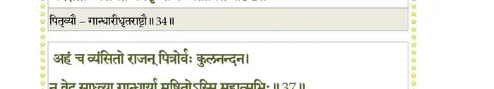
श्लोक ३५
सूत उवाच–
कृपया स्नेहवैक्लव्यात्सूतो विरहकर्शितः ।
आत्मेश्वरमचक्षाणो न प्रत्याहातिपीडितः।। ३५ ।।
कृपया स्नेहवैक्लव्यात्सूतो विरहकर्शितः ।
आत्मेश्वरमचक्षाणो न प्रत्याहातिपीडितः।। ३५ ।।
श्लोक ३६
विसृज्याश्रूणि पाणिभ्यां विष्टभ्यात्मानमात्मना ।
अजातशत्रुं प्रत्यूचे प्रभोः पादावनुस्मरन्।। ३६ ।।
अजातशत्रुं प्रत्यूचे प्रभोः पादावनुस्मरन्।। ३६ ।।
श्लोक ३७
सञ्जय उवाच–
अहञ्च व्यंसितो राजन् पित्रोर्वः कुलनन्दन ।
न वेद साध्व्या गान्धार्या मुषितोऽस्मि महात्मभिः।। ३७ ।।
अहञ्च व्यंसितो राजन् पित्रोर्वः कुलनन्दन ।
न वेद साध्व्या गान्धार्या मुषितोऽस्मि महात्मभिः।। ३७ ।।
भागवततात्पर्यनिर्णय
श्लोक ३८
सूत उवाच–
एतस्मिन्नन्तरे विप्राः नारदः प्रत्यदृश्यत ।
वीणां त्रितन्त्रीं ध्वनयन् भगवान् सहतुम्बुरुः।। ३८ ।।
एतस्मिन्नन्तरे विप्राः नारदः प्रत्यदृश्यत ।
वीणां त्रितन्त्रीं ध्वनयन् भगवान् सहतुम्बुरुः।। ३८ ।।
श्लोक ३९
राज्ञादरोपनीतार्घ्यं प्रत्युत्थानाभिवन्दितम् ।
परमासन आसीनं कौरवेन्द्रोऽभ्यभाषत।। ३९ ।।
परमासन आसीनं कौरवेन्द्रोऽभ्यभाषत।। ३९ ।।
श्लोक ४०
युधिष्ठिर उवाच–
नाहं वेद गतिं पित्रोर्भगवान्क्वगतावितः ।
कर्णधार इवापारे सीदतां पारदर्शनः।। ४० ।।
नाहं वेद गतिं पित्रोर्भगवान्क्वगतावितः ।
कर्णधार इवापारे सीदतां पारदर्शनः।। ४० ।।
भागवततात्पर्यनिर्णय
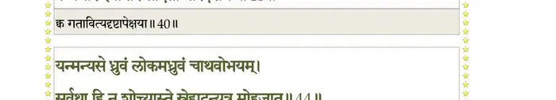
श्लोक ४१
नारद उवाच–
मा कञ्चन शुचो राजन् यदीश्वरवशं जगत् ।
स संयुनक्ति भूतानि स एव वियुनक्ति च।। ४१ ।।
मा कञ्चन शुचो राजन् यदीश्वरवशं जगत् ।
स संयुनक्ति भूतानि स एव वियुनक्ति च।। ४१ ।।
श्लोक ४२
यथा गावो नसि प्रोता तन्त्यां बद्धाः स्वदामभिः ।
वाक्तन्त्यां नामभिर्बद्धा वहन्ति बलिमीशितुः।। ४२ ।।
वाक्तन्त्यां नामभिर्बद्धा वहन्ति बलिमीशितुः।। ४२ ।।
श्लोक ४३
यथा क्रीडोपस्कराणां संयोगविगमाविह ।
इच्छया क्रीडितुः स्यातां तथैवेशेच्छया नृणाम्।। ४३ ।।
इच्छया क्रीडितुः स्यातां तथैवेशेच्छया नृणाम्।। ४३ ।।
श्लोक ४४
यन्मन्यसे ध्रुवं लोकमध्रुवं वाथवोभयम् ।
सर्वथा हि न शोच्यास्ते स्नेहादन्यत्र मोहजात्।। ४४ ।।
सर्वथा हि न शोच्यास्ते स्नेहादन्यत्र मोहजात्।। ४४ ।।
भागवततात्पर्यनिर्णय
श्लोक ४५
तस्माज्जह्यङ्ग वैक्लव्यमज्ञानकृतमात्मनः ।
कथं त्वनाथाः कृपणा वर्तेरन् बत मामृते।। ४५ ।।
कथं त्वनाथाः कृपणा वर्तेरन् बत मामृते।। ४५ ।।
श्लोक ४६
कालकर्मगुणाधीनो देहोऽयं पाञ्चभौतिकः ।
कथमन्यांस्तु गोपायेत् सर्पग्रस्तो यथा परम्।। ४६ ।।
कथमन्यांस्तु गोपायेत् सर्पग्रस्तो यथा परम्।। ४६ ।।
श्लोक ४७
अहस्तानि सहस्तानामपदो द्विचतुष्पदाम् ।
अणूनि तात महतां जीवो जीवस्य जीवनम्।। ४७ ।।
अणूनि तात महतां जीवो जीवस्य जीवनम्।। ४७ ।।
श्लोक ४८
तदिदं भगवान् राजन्नेक आत्माऽऽत्मनां स्वदृक् ।
अन्तरोऽनन्तरो भाति पश्य त्वं माययोरुताम्।। ४८ ।।
अन्तरोऽनन्तरो भाति पश्य त्वं माययोरुताम्।। ४८ ।।
श्लोक ४९
सोऽयमद्य महाराज भगवान् भूताभावनः ।
कालरूपोऽवतीर्णोऽस्यामभावाय सुरद्विषाम्।। ४९ ।।
कालरूपोऽवतीर्णोऽस्यामभावाय सुरद्विषाम्।। ४९ ।।
श्लोक ५०
निष्पादितं देवकृत्यमवशेषं प्रतीक्षते ।
तावद्यूयमवेक्षध्वं भवेद्यावदिहेश्वरः।। ५० ।।
तावद्यूयमवेक्षध्वं भवेद्यावदिहेश्वरः।। ५० ।।
श्लोक ५१
धृतराष्ट्रः सह भ्रात्रा गान्धार्या च स्वभार्यया ।
दक्षिणेन हिमवत ऋषीणामाश्रमं गतः।। ५१ ।।
दक्षिणेन हिमवत ऋषीणामाश्रमं गतः।। ५१ ।।
भागवततात्पर्यनिर्णय
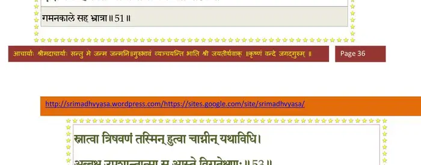
श्लोक ५२
स्रोतोभिः सप्तभिर्यत्र स्वर्धुनी सप्तधाऽभ्यगात् ।
सप्तानां प्रीतये नाम्ना सप्तस्रोतः प्रचक्षते।। ५२ ।।
सप्तानां प्रीतये नाम्ना सप्तस्रोतः प्रचक्षते।। ५२ ।।
श्लोक ५३
स्नात्वा त्रिषवणं तस्मिन् हुत्वा चाग्नीन् यथाविधि ।
अब्भक्ष उपशान्तात्मा स आस्तेऽविगतेक्षणः१।। ५३ ।।
अब्भक्ष उपशान्तात्मा स आस्तेऽविगतेक्षणः१।। ५३ ।।
भागवततात्पर्यनिर्णय
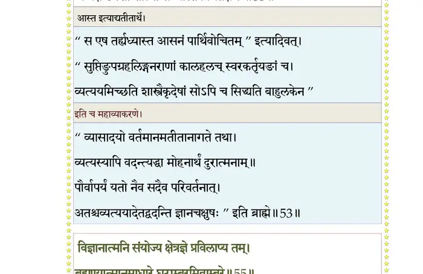
श्लोक ५४
जितासनो जितश्वासः प्रत्याहृतषडिन्द्रियः ।
हरिभावनया ध्वस्तरजःसत्वतमोमलः।। ५४ ।।
हरिभावनया ध्वस्तरजःसत्वतमोमलः।। ५४ ।।
श्लोक ५५
विज्ञानात्मनि संयोज्य क्षेत्रज्ञे प्रविलाप्य तम् ।
ब्रह्मण्यात्मानमाधारे घटाम्बरमिवाम्बरे।। ५५ ।।
ब्रह्मण्यात्मानमाधारे घटाम्बरमिवाम्बरे।। ५५ ।।
भागवततात्पर्यनिर्णय
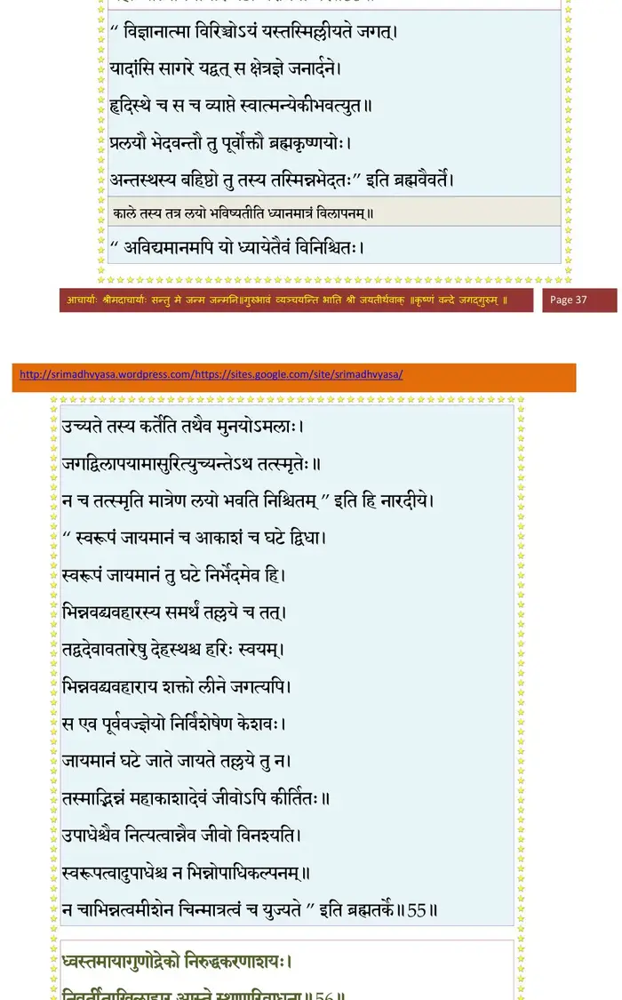
श्लोक ५६
ध्वस्तमायागुणोद्रेको निरुद्धकरणाशयः ।
निवर्तिताखिलाहार आस्ते स्थाणुरिवाधुना ।
तस्यान्तरायो नैवाभूत् सन्यस्ताखिलकर्मणः।। ५६ ।।
निवर्तिताखिलाहार आस्ते स्थाणुरिवाधुना ।
तस्यान्तरायो नैवाभूत् सन्यस्ताखिलकर्मणः।। ५६ ।।
भागवततात्पर्यनिर्णय
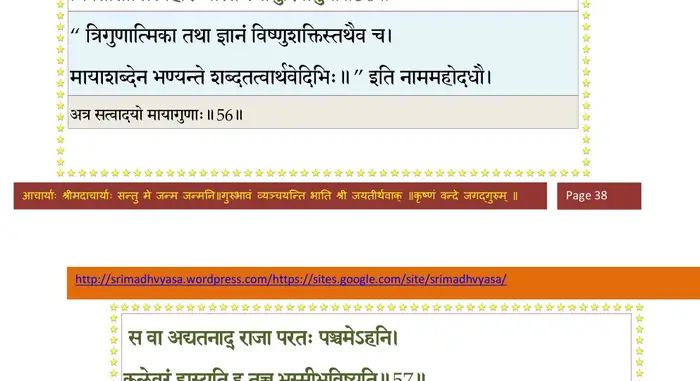
श्लोक ५७
स वा अद्यतनाद्राजा परतः पञ्चमेऽहनि ।
कलेवरं हास्यति ह तच्च भस्मीभविष्यति।। ५७ ।।
कलेवरं हास्यति ह तच्च भस्मीभविष्यति।। ५७ ।।
भागवततात्पर्यनिर्णय
श्लोक ५८
दह्यमानेऽग्निभिर्देहे पत्युः पत्नी सहोटजे ।
बहिः स्थिता पतिं साध्वी तमग्निमनुवेक्ष्यति।। ५८ ।।
बहिः स्थिता पतिं साध्वी तमग्निमनुवेक्ष्यति।। ५८ ।।
श्लोक ५९
विदुरस्तु तदाश्चर्यं निशाम्य कुरुनन्दन ।
हर्षशोकयुतस्तस्माद्गन्ता तीर्थनिषेवकः।। ५९ ।।
हर्षशोकयुतस्तस्माद्गन्ता तीर्थनिषेवकः।। ५९ ।।
भागवततात्पर्यनिर्णय
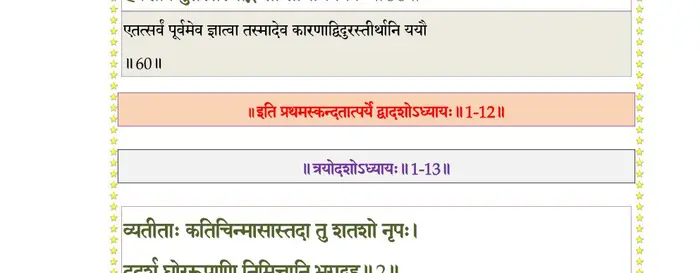
श्लोक ६०
इत्युक्त्वाऽथारुहत्स्वर्गं नारदः सहतुम्बुरुः ।
युधिष्ठिरो वचस्तस्य हृदि कृत्वाऽजहाच्छुचः।। ६० ।।
युधिष्ठिरो वचस्तस्य हृदि कृत्वाऽजहाच्छुचः।। ६० ।।
।। इति श्रीमद्भागवते प्रथमस्कन्धे द्वादशोऽध्यायः ।।